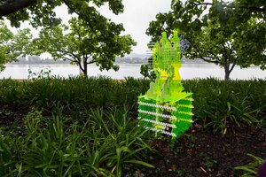
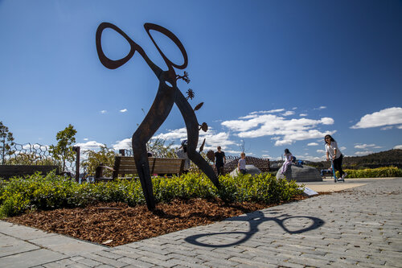

Festivals
Canberra Art Biennial extends across Canberra’s public spaces, and we are excited to partner with more private and public gallery / cultural spaces in inner north and south Canberra.
Artists will be responding to the designed city of Canberra: represented by Australia’s political, cultural and physical history. The event engages people of all ages and abilities, delighting, puzzling and encouraging interaction with art and public space.
2022 Festival

2020 Festival
